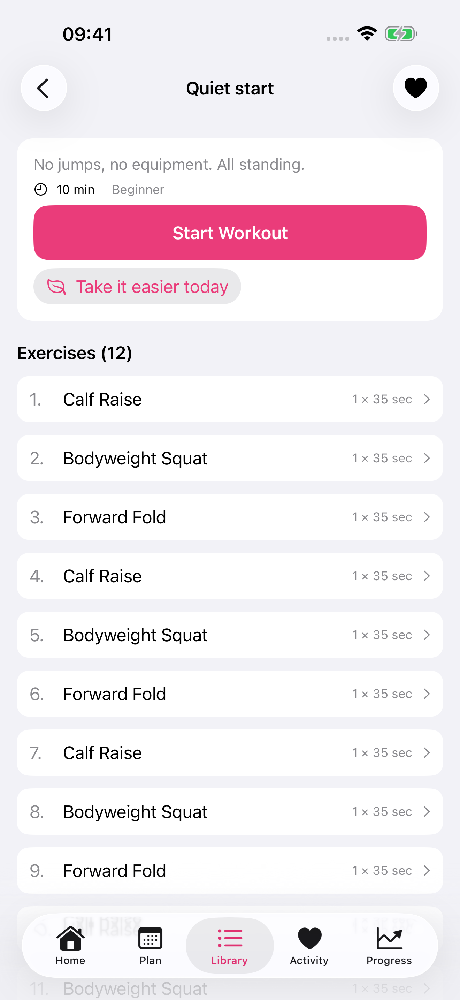
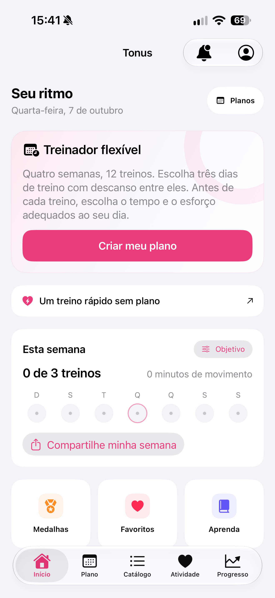

Por Nikita Revin, desenvolvedor do Tonus · 26 de outubro de 2026
Encontre seus treinos favoritos, repita a última sessão e entenda como isso aparece no histórico e no plano de 12 treinos.
Quando você encontra uma sequência que quer fazer outra vez, pode salvá-la pelo coração na página do treino. O atalho Favoritos, na tela inicial, reúne os treinos salvos e também permite repetir a última sessão concluída.
Salve pelo coração na página do treino
- Abra a página do treino que quer guardar.
- Toque no coração no canto superior direito. O coração preenchido indica que ele foi adicionado aos favoritos.
- Para retirar esse treino da lista, toque novamente no coração.
Você pode salvar um treino antes de começar. Marcar o coração guarda um atalho para a sequência; para registrar uma atividade no histórico, é preciso realizar a sessão e confirmar o resultado.

Abra Favoritos na tela inicial
Na aba Início, procure Favoritos abaixo do resumo Esta semana. Se o atalho estiver fora da tela, role para baixo. Ele abre a página Meus treinos, onde ficam as sequências salvas.
Se a lista estiver vazia, volte à página de um treino e toque no coração. Depois, abra Favoritos de novo. Os favoritos são salvos localmente no iPhone.

Repita a última sessão concluída
Na página Meus treinos, a seção Repita o último treino oferece a sessão concluída mais recente. Toque no nome para abrir os detalhes, confira os exercícios e comece quando estiver pronto.
Essa seção depende de haver uma sessão registrada. Se você ainda não concluiu um treino, ela pode não aparecer. Salvar um favorito, por si só, não cria uma sessão concluída.
Antes de repetir, confira a duração e os movimentos da sequência aberta. Se quiser começar uma sessão rápida com outra duração ou outro estilo, use a escolha de treino rápido; o guia dos três modos explica quais incluem movimentos no chão.
O que acontece com o plano de 12 treinos
Uma repetição aberta por Meus treinos funciona como uma sessão avulsa. Ao concluí-la e confirmar o resultado, você ganha uma nova entrada no histórico. Ela não conclui a próxima sessão do Treinador flexível.
Por exemplo: depois de concluir o terceiro treino do plano, você pode abrir uma sequência favorita para fazê-la novamente. A repetição aparece no histórico, enquanto o quarto treino continua sendo a próxima sessão do plano. Para seguir o plano, abra o treino pelo cartão do Treinador flexível.
Assim, o histórico pode ter mais sessões do que o número de etapas concluídas no plano. Consulte o resumo da semana para acompanhar as atividades e o guia do plano flexível para entender os dias escolhidos e os treinos adiados.
Confirme o resultado e confira o histórico
Ao terminar a sessão, confirme a avaliação de dificuldade na tela de resultado para salvá-la. Voltar a um favorito ou removê-lo da lista depois disso não apaga o registro do treino já concluído.
Planos e instruções escritas funcionam offline. Vídeos online precisam de conexão, e serviços externos podem mostrar anúncios. O Tonus 1.4 é gratuito, sem cadastro, assinatura ou compras no app, para iOS 17 ou posterior. A integração com Apple Saúde é opcional.